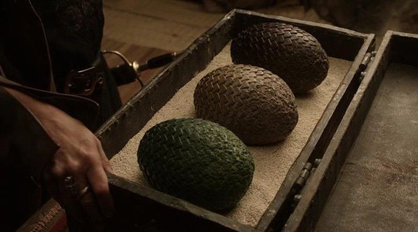

Строение и внешний вид
Драконы — летающие рептилии, покрытые чешуёй. У них две ноги и пара огромных перепончатых крыльев, как у летучих мышей. Джордж Мартин несколько раз специально заострял внимание, что передних ног у его драконов нет, у них только две пары конечностей — крылья и ноги. В традиционной европейской геральдике «драконом» называется четвероногое и двукрылое существо, двуногое и двукрылое же носит название «виверна» (англ. wyvern).
Сравнительно небольшая голова дракона посажена на длинной извилистой шее, хвост у драконов столь же длинный и играет роль балансира. На голове есть рога, вдоль хребта идёт гребень.
Драконья чешуя окрашена в яркие цвета, как правило, с металлическим отливом. В разные цвета могут быть также окрашены рога,хребет, брюхо, маховые кости, перепонки и другие части.Дракона чрезвычайно сложно убить — у взрослого дракона крепкая чешуя покрывает всё тело, включая и брюхо. Единственным уязвимым местом являются глаза и мозг за ними, а вовсе не брюхо или глотка, как говорится в некоторых легендах. «Смерть выходит из пасти дракона, — написал септон Барт в своей «Неестественной истории», — но смерть не входит таким путем».
Физиология
Драконы питаются мясом, причем только жареным. По всей видимости, они переваривают пищу, подобно обычным зверям: в «Порочном принце» упоминается «куча драконьих испражнений». Неизвестно, насколько распространен каннибализм среди драконов, но они могут нападать и друг на друга. Во времена Танца Драконов жил дракон по прозвищу Каннибал, который питался яйцами, детенышами и трупами скончавшихся сородичей. Такое поведение, по всей видимости, было исключительным, однако Солнечный Огонь после убийства им Лунной Плясуньи также пожирал ее останки.
Однако размножение драконов, по всей видимости, двуполое: известно, что в течение войны между Рейнирой и Эйгоном II Среброкрылая и Вермитор «сплетались» друг с другом, а Тессарион и Морской Дым вместо схватки исполняли действия, которые можно счесть за брачный танец.Драконы живут очень долго — десятилетиями и даже столетиями. Самый старый известный в Вестеросе дракон Балерион прожил около двухсот лет, и за это время он достиг размеров, что «мог проглотить целого зубра, а может быть, и волосатого мамонта». Вхагар на момент гибели в воздушном бою над Божьим Оком был 181 год; она почти достигла размеров Балериона. Новорождённые драконы были размером с тощую кошку. Вслед за собой Таргариены привезли черепа своих прежних драконов, и самому старому из этих черепов было более 3000 лет. Два самых последних черепа, размером с череп мастифа, принадлежали последним драконам с Драконьего Камня, умершим вскоре после рождения. Напротив, черепа драконов-долгожителей, в том числе Балериона отличались чудовищными размерами. Для роста драконам нужна пища и свобода.
Яйца драконов
Драконы откладывают яйца. По сравнению с гигантскими размерами взрослых драконов, их яйца на удивление малы: величиной они примерно с человеческую голову. Тем не менее, они тяжелые, словно камень. Скорлупа яйца покрыта множеством крохотных чешуек, похожих по фактуре на полированный металл. Яйца отличаются по цвету, тону и блеску, и их окраска совпадает с окраской дракона, которому предстоит вылупиться из яйца.
Драконы, похоже, несут яйца очень редко — известно лишь небольшое количество драконьих яиц, и после вымирания драконов эти яйца стали практически бесценными редкостями. Нет какого-то определённого срока, за который яйцо должно проклюнуться; яйца могут храниться десятилетиями и даже веками, прежде чем из них вылупится дракон.
В роду Таргариенов существовала традиция дарить каждому новорождённому принцу крови драконье яйцо; яйцо кладут в колыбель, и оно остаётся собственностью принца до конца его жизни. Эта традиция была заложена во времена Эйгона I Таргариена, когда принцесса Рейна Таргариен положила драконьи яйца в колыбели своих младших брата и сестры — Джейхейриса и Алисанны. Из этих яиц позже вылупились драконы Вермитор и Среброкрылая.
Известные яйца:
- Яйцо Элейны Таргариен, белое с золотыми полосками;
- Яйцо Эйгона V Невероятного, белое с зелёными жилками, переливалось на свету;
- Яйцо Эйриона Таргариена, золотое с серебром и огненными прожилками;
- Яйцо Эймона Таргариена, не описывалось;
- Яйцо Амброза Баттервелла, подаренное ему Эйгоном IV, тёмно-красное с чёрными завитками и золотыми крапинками;
- Яйцо Эурона Грейджоя, брошенное, по его словам, в море;
- Три яйца Дейнерис Таргариен, привезённые из Асшая:
- Яйцо Дрогона, черное с алыми завитками;
- Яйцо Рейгаля, темно-зелёное с золотыми крапинками;
- Яйцо Визериона, бледно-жёлтое с золотыми полосками (в переводе Виленской — красными);
- По слухам, на Драконьем Камне есть тайник с драконьими яйцами, однако никому найти их не удалось.
Драконы Таргариенов
Таким образом, дом Таргариенов стал единственным семейством драконьих владык в мире. Он называли самих себя драконами и говорили, что драконий огонь растворён в их крови. На гербе Таргариенов, взятом уже в Вестеросе, был изображен красный трехголовый дракон на черном поле (в действительности многоголовых драконов не существует). Из пяти драконов, покинувших Валирию, до Завоевания Вестероса дожил только один, Балерион; впрочем, на Драконьем Камне из яиц вылуплялись новые драконы. Три дракона (Балерион, Вхагар и Мераксес) участвовали в битвах Завоевания Эйгона, после которого Таргариены стали править в Вестеросе. В войне с дорнийцами, Таргариены потеряли Мераксес, а в ходе противостояния Мейгора и его племянника, был убита драконица Ртуть. При короле Мейгоре, началось строительство Драконьего Логова, которое в будущем станем обиталищем драконов, находящихся в Королевской Гавани.
На момент вступления на трон Визериса Первого в Драконьем Логове в Королевской Гавани и на острове Драконий Камень жило в общей сложности двадцать драконов разных возрастов и размеров — некоторые имели наездников-Таргариенов, некоторые нет, некоторые, как Овцекрад и Каннибал, вовсе выросли дикими и не подпускали к себе людей.
Во время гражданской войны, известной как Танец Драконов, враждующие члены дома Таргариенов охотно использовали драконов друг против друга, так что неудивительно, что большинство драконов погибло на войне, большей частью в сражениях друг с другом. Несколько драконов, содержавшихся в Драконьем Логове в конце 130 года, были убиты толпой восставших горожан; Каннибал и Овцекрад исчезли — первый улетел с Драконьего Камня в неизвестном направлении, второй предположительно поселился в Лунных горах со своей хозяйкой Крапивой. Среброкрылая, последний старый дракон, осталась без всадника и угнездилась у Алого Озера — никто так и не смог ее приручить. Таким образом, к концу Танца Драконов в 131 году в распоряжении Эйгона III Таргариена остался лишь один-единственный дракон Утро, принадлежавший Рейне Таргариен — детеныш, вылупившийся из яйца незадолго до войны.
На Драконьем Камне осталось, правда, большое количество драконьих яиц — по крайней мере еще одно или два проклюнулось позже. Тирион Ланнистер упоминал в числе девятнадцати черепов, которые хранились в Красном замке, два черепа последних драконов, вылупившихся на Драконьем Камне — «пара не больше черепов мастифа, странные уродливые останки». Арлан из Пеннитри видел последнего дракона — это была «самка, маленькая, зеленая и чахлая, с поникшими крыльями»; неясно, была ли это Утро или нет. Последний дракон умер в 153 году от З.Э., когда на троне все еще находился Эйгон III. Она успела отложить пять яиц, но ни одно из них не проклюнулось. Король Эйгон III получил незаслуженное и несправедливое прозвище Драконья Погибель — ходили слухи, что он питал ненависть к драконам и сам отравил последних из этих существ: когда-то на его глазах Эйгон II Таргариен скормил мать Эйгона III Рейниру своему дракону.
jhggkgkgkhgkhugkuyuukgukygkug